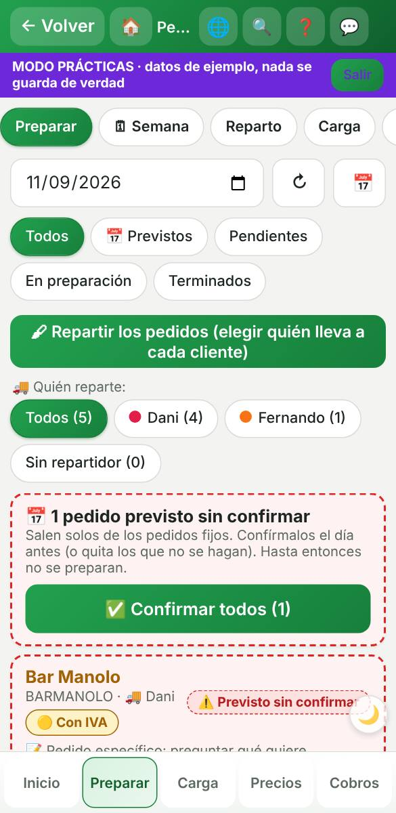
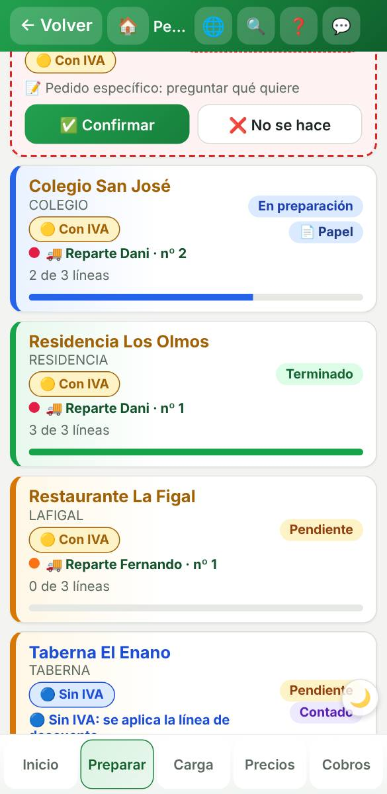
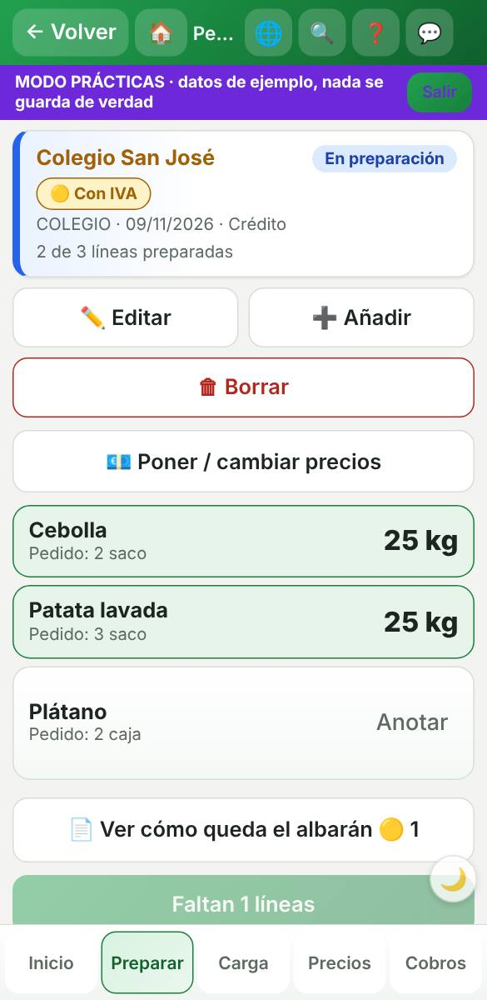
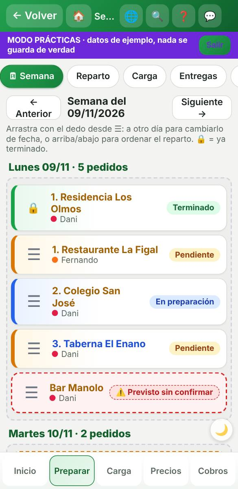
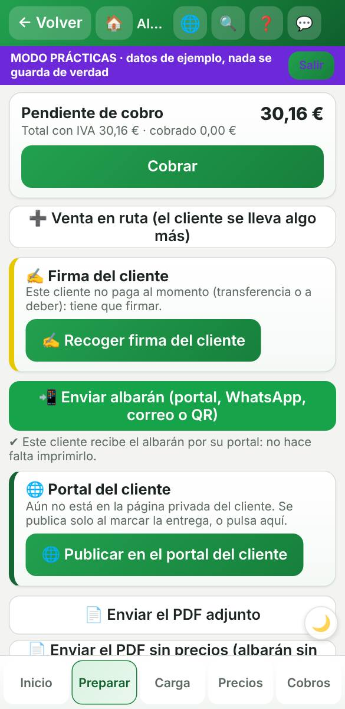
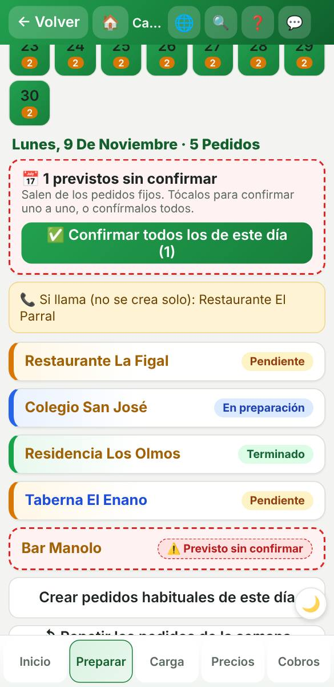

1. Preparar: los pedidos del día
Arriba, quién reparte (cada uno con su color). Los pedidos fijos salen como PREVISTO con raya roja discontinua: se confirman el día antes (✅) o se quitan (❌).

2. Cada pedido con su estado
- Pendiente (naranja): por hacer.
- En preparación (azul): con la barra de cuántas líneas van.
- Terminado (verde): albarán hecho.
- Nombre en azul = sin IVA · en dorado = con IVA.
- 📄 Papel = ese cliente quiere el albarán impreso.

3. Dentro de un pedido
Las líneas en verde ya tienen su peso. Toca «Anotar» en las que faltan. Cuando están todas, «Terminar».

4. Semana: mover y ordenar con el dedo
Arrastra desde ☰ a otro día o arriba/abajo para el orden del reparto. 🔒 = ya terminado.

5. El albarán se ENVÍA, no se imprime
Se sube solo al portal del cliente al marcar la entrega. «📲 Enviar albarán» si lo quiere al momento. Solo se imprime a los clientes de 📄 papel.
🖨 Lo único que se imprime cada día es la hoja de COMPRA y la hoja de CARGA (la de carga, con todos los clientes preparados).

6. Calendario
Cada día con sus pedidos y previstos, y los clientes «si llama» como recordatorio.
